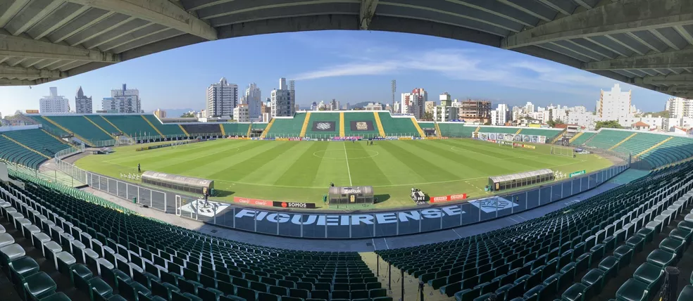

O Figueirense
Figueirense Futebol Clube, mais conhecido como Figueirense e popularmente como Figueira, é um clube de futebol brasileiro da cidade de Florianópolis, Santa Catarina. Fundado em 12 de junho de 1921 na região central de Florianópolis localizada no antigo bairro da Figueira, suas cores são o preto e o branco. É o segundo clube mais antigo de Santa Catarina em atividade. Décadas após sua fundação, o Figueirense mudou-se para a região continental de Florianópolis, no bairro do Estreito, onde construiu o Estádio Orlando Scarpelli. Na década de 1930, o clube atingiu um dos seus auges com a conquista de cinco títulos do Campeonato Catarinense. Após um longo período sem conquistas estaduais nas décadas de 1950 e 1960, o Figueirense voltou a se consagrar campeão estadual em 1972 e 1974, época em que teve as suas primeiras participações na elite do Campeonato Brasileiro. O Figueirense se firmou nos principais campeonatos de futebol do Brasil no início do Século XXI, quando se consolidou na disputa da Série A e foi vice-campeão da Copa do Brasil de 2007
Por que Orlando Scarpelli?
Orlando Scarpelli, um homem à frente do seu tempo, apaixonado pelo time alvinegro, presidiu o Figueirense em 1944 e 1945. Durante a vigência de seu mandato fez a doação do terreno para a construção do estádio do Clube. O presente foi o cumprimento de um acordo entre Scarpelli e Aderbal Ramos da Silva, onde cada um se responsabilizaria em doar terras aos dois times da capital. O ex-governador comprometeu-se em ajudar o Avaí. Orlando Scarpelli tinha uma visão empreendedora e defendia a transformação dos clubes de futebol em empresas, e também criticava a falta de apoio da classe empresarial para o futebol. Além de garantir o terreno, o industrial empenhou-se na arrecadação de recursos para a construção da nova sede alvinegra. No ano de 1947 foram lançados os títulos patrimoniais para arrecadar recursos para o início das obras. Orlando Scarpelli recebeu do Conselho Deliberativo o título de sócio Grande Benemérito do Figueirense. Ele é a única pessoa a receber essa homenagem em toda a história do Clube, isso porque, em 1956, o presidente Thomaz Chaves Cabral introduziu ao Estatuto esse título e no ano seguinte, o extinguiu. Mesmo morando em Blumenau, Scarpelli acompanhava com frequência as obras do estádio, os jogos do alvinegro e às reuniões com diretoria. Em 1975, o empresário ajudou o Clube, mais uma vez, quando o time disputou o campeonato nacional, viabilizando melhorias no estádio e na implantação de arquibancadas metálicas.
